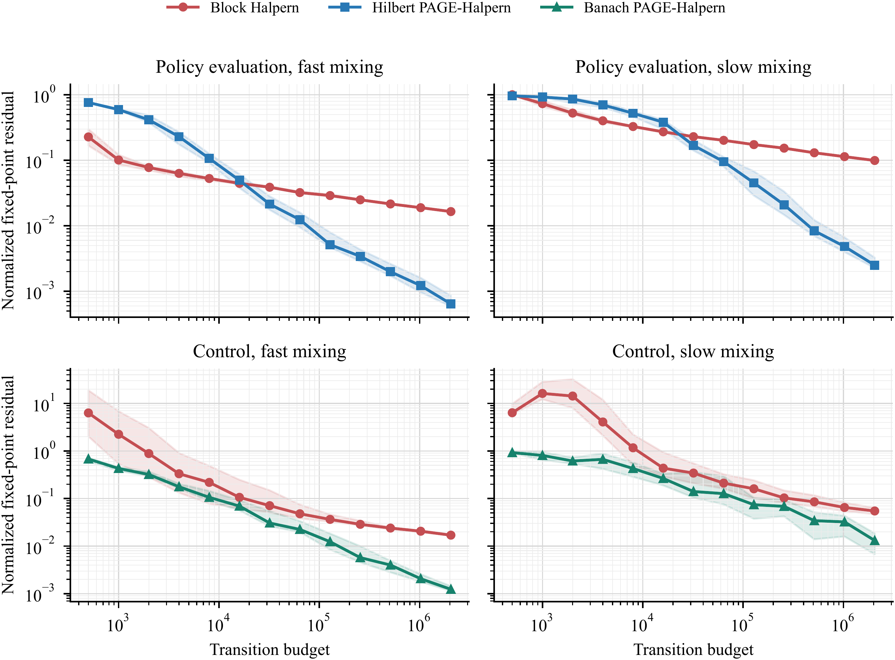

Stochastic Halpern Iteration from a Single Markov Trajectory
September 27, 2026PAGE-based last-iterate guarantees for non-expansive operators in Hilbert and Banach geometries
Reinforcement learning rarely hands an algorithm a fresh, independent example at every update. An agent interacts with an environment, observes a continuing stream of transitions, and each new state depends on the previous one. That dependence matters when learning is expressed as repeated applications of an operator: the sampling error at one step is related to the next, and its conditional mean can depend on where the chain currently is.
This paper studies stochastic fixed-point iteration under precisely that information pattern. Its central result is that Halpern iteration can be combined with recursive PAGE variance reduction to obtain last-iterate guarantees from one continuing Markov trajectory. The analysis covers Hilbert spaces and, more unusually, finite-dimensional Banach spaces such as the sup-norm geometry used by many reinforcement-learning operators.
Why a fixed-point residual is difficult to control
A fixed-point problem asks for a point x* satisfying T(x*) = x*. In many reinforcement-learning problems, T is non-expansive: applying it does not increase distances, but it need not shrink them either. Without contraction, sampling errors are not automatically damped. This makes a guarantee for the final iterate, measured by its residual ||x - T(x)||, a meaningful test of the method rather than a by-product of convergence in an average.
Halpern iteration anchors every update to the initial point. In its deterministic form, x_n is a weighted average of that anchor and the previous iterate after applying T. The anchor supplies structure that yields a last-iterate residual guarantee for non-expansive maps. The challenge is to preserve that guarantee when T is only observed through noisy samples from a dependent trajectory.
Separating Markov dependence from sampling noise
The paper assumes a finite, irreducible, aperiodic Markov chain and works with stochastic operator evaluations whose stationary mean is T. A block of consecutive states is not an independent minibatch. In particular, its error can have a predictable boundary component because the chain's starting state is known from the observations collected so far.
The analysis handles this through the Poisson equation. For a state-dependent error g with stationary mean zero, the equation rewrites its sum along the chain as martingale differences plus a telescoping boundary term. If ||g||₂,π denotes its stationary root-mean-square size, then for a block of length S the conditional bias of the block average is at most C_B ||g||₂,π / S, and its conditional second moment is at most C_V ||g||₂,π² / S. Thus the random component shrinks at the usual square-root rate, while the boundary bias decays as 1/S. The bounds remain valid when a block starts at a stopping time and its length is chosen before observing the block.
The Poisson bounds remove the need to restart the chain or require stationarity at each block start. They still rely on finite-state geometric mixing, with constants that depend on the chain.
Why direct block estimation costs more
A direct method estimates T at each iteration by averaging a new block of transitions. To keep the accumulated perturbation small enough for the Halpern residual bound, later estimates must become increasingly accurate. The resulting baseline has expected last-iterate residual O(log N / N), but its sample complexity scales as ε⁻⁵ up to logarithmic factors. The cost comes from repeatedly building accurate estimates from scratch.
PAGE reuses each sampled state
PAGE avoids rebuilding every estimate independently. It occasionally refreshes an estimate using a block of samples. Between refreshes, it updates that estimate using the difference between operator evaluations at the current and previous query points, computed on the same sampled states. When the query points are close, much of the sample noise is shared and cancels in the difference, so the recursive estimate can be updated with a shorter block.
That cancellation requires a substantive assumption: the second moment of the same-state difference error must grow at most proportionally to the squared distance between query points. This is the analogue of the mean-square regularity used by variance-reduced stochastic optimization. Finite variance of individual evaluations alone is not enough to justify the PAGE improvement.
This is a multi-point oracle. One observed transition must support evaluations at both the current and previous value function (or Q-function). In the tabular experiments, the same stored transition provides both evaluations without another environment step. This uses more computation, and stronger oracle access, than a model that permits only one query point per sample.
Two geometries, two residual arguments
In a Hilbert space, non-expansiveness of T makes the residual operator I - T cocoercive. The paper uses this structure to control the PAGE estimator for the residual directly. The resulting leading sample complexity is O(ε⁻³), without an additional logarithmic factor in that accuracy dependence.
Many reinforcement-learning operators, however, are non-expansive in the sup norm and not in any inner-product norm. The Hilbert residual argument therefore does not apply. For a general finite-dimensional Banach norm, the paper instead controls changes in the anchored Halpern displacement between successive iterates. This gives expected sample complexity scaling as ε⁻³ up to logarithmic factors. The same analysis covers sup and block-sup norms, with their norm-comparison constants stated explicitly. The Banach result is not faster than the Hilbert result. It reaches the same leading accuracy power under a more general geometry, while paying logarithmic terms.
The paper also gives a high-probability Banach-space guarantee. It controls the estimator in an auxiliary smooth norm that dominates the working norm. For sup-norm applications, smooth approximations introduce logarithmic dimension dependence. The result requires additional concentration and stability assumptions; concentration is not applied directly in the nonsmooth sup norm.
A controlled test on continuing trajectories
The experiments use two synthetic eight-state average-reward problems driven by a continuing cycle chain. One is fixed-policy evaluation, whose Bellman operator is non-expansive in Euclidean norm. The other is two-action control, whose optimality operator is non-expansive in the sup norm but not in a Hilbert norm. Each is tested with a fast- and a slow-mixing chain. The methods are compared at common environment-transition budgets, on twenty trajectories per setting, with each method pair sharing the same trajectory.
Figure 1 reports the median normalized last-iterate residual, with the interquartile range across trajectories. Rows separate evaluation from control; columns separate fast from slow mixing. The comparisons count observed transitions, not operator evaluations, so PAGE's two evaluations on one stored transition are reflected in its oracle-access requirement rather than charged as another environment step.

Figure 1. Median normalized fixed-point residual versus environment-transition budget. Top: Hilbert-space policy evaluation. Bottom: sup-norm control. Left and right columns use fast- and slow-mixing chains. Shaded bands show the interquartile range over 20 trajectories.
The pattern depends on mixing speed. On fast policy evaluation, block Halpern reaches residual 0.05 sooner than PAGE (8,839 versus 14,684 transitions), reflecting its lower initial overhead. Later the curves cross: at 128,000 transitions, PAGE's median residual is 0.00515, compared with 0.0290 for the block method. Under slow mixing, the separation is clearer. PAGE reaches residual 0.05 in a median of 107,374 transitions for policy evaluation and 80,000 for control. The block method does not reach that target within 2,048,000 transitions in policy evaluation, and only 8 of 20 control runs reach it.
Median observed transitions to normalized residual 0.05 on the slow-mixing chain. Parentheses report successful runs when fewer than 20 reach the target; the maximum budget is 2,048,000 transitions.
| Problem | Block Halpern | PAGE-Halpern |
|---|---|---|
| Policy evaluation (Hilbert) | >2,048,000 (0/20) | 107,374 |
| Control (sup norm) | >2,048,000 (8/20) | 80,000 |
In fast-mixing policy evaluation, the block method reaches 0.05 in 8,839 transitions versus 14,684 for PAGE. The curves later cross, with PAGE having the lower median residual at 128,000 transitions.
These small tabular experiments test whether the oracle assumptions and algorithms can be implemented on a single online trajectory. They are not designed to estimate worst-case complexity exponents or to establish performance at large scale. Their main empirical signal is that recursive same-state differences can offset the cost of dependence, particularly when the chain mixes slowly, while the block baseline remains competitive in some fast-mixing regimes.
What the result does and does not establish
The guarantees require a finite irreducible aperiodic chain, stable iterates, controlled stationary second moments, and a mean-square bound on same-state oracle differences. High-probability results add smooth-norm and concentration conditions. The chain need not be restarted or stationary at block boundaries, but the theory still assumes Markovian mixing.
The ε⁻³ Hilbert rate is not established as minimax optimal by the paper's lower-bound comparison. The cited Ω(ε⁻³) lower bound covers a broad linear-span class with single-point oracle access. PAGE can evaluate two query points on the same sample, so the oracle models differ. Matching lower bounds for PAGE's information model remain open.
The broader methodological point is narrower and more useful than a blanket claim about RL: when the operator is non-expansive in the geometry of interest, the data arrive from one mixing trajectory, and one sample can be reused at neighboring query points, Halpern anchoring and recursive estimation can deliver last-iterate guarantees without resetting the environment. The Banach-space analysis is what makes that statement apply to sup-norm control problems rather than only to Hilbert-space examples.